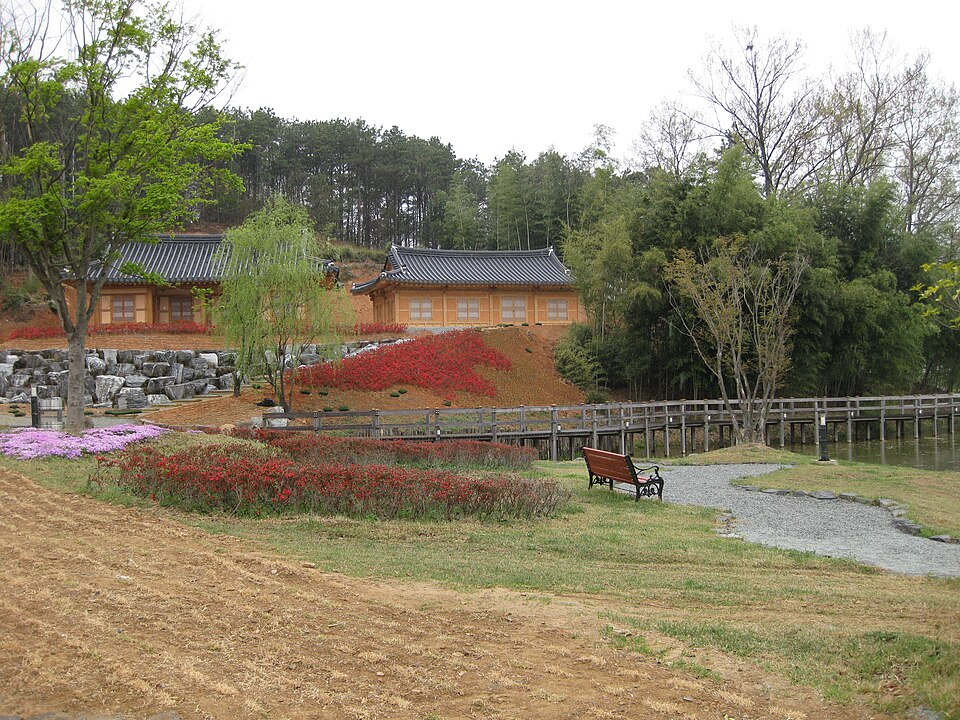

지역·대상별
담양 검정고시 — 자퇴 후, 리듬부터 다시 잡는 청소년 로드맵

학교를 그만두고 나면 “이제 뭘 해야 하지?” 하는 막막함이 먼저 찾아와요. 담양 검정고시 과외로 상담 오는 청소년들도 처음엔 대부분 그렇습니다. 자퇴는 끝이 아니라 방향을 다시 고르는 시간이에요. 자퇴 뒤 검정고시를 준비하는 순서를 정리했어요.
1. 먼저 응시자격부터 확인
자퇴했다고 바로 다음 시험을 볼 수 있는 건 아니에요. 학교를 그만둔 뒤 일정 기간이 지나야 응시할 수 있어서, 자퇴한 날짜와 시험 공고일을 함께 확인해야 합니다. 정확한 기준은 시·도교육청 공고에 나오니, 그걸 기준으로 “몇 회차 시험을 볼지”부터 정하세요.
2. 하루 리듬을 다시 만드는 게 먼저
학교를 안 가면 가장 먼저 무너지는 게 생활 리듬이에요. 늦게 자고 늦게 일어나는 날이 이어지면 공부를 시작하기가 점점 어려워집니다.
- 일어나는 시간 하나만 고정하는 것부터 시작해요.
- 처음엔 하루 2~3시간, 익숙해지면 조금씩 늘립니다.
- 공부하는 장소를 집 밖(도서관 등)으로 정하면 리듬 잡기가 쉬워요.
3. 검정고시 다음을 같이 그린다
검정고시는 평균 60점이면 합격이지만, 그 뒤에 무엇을 할지에 따라 목표 점수가 달라져요. 고졸 검정고시 성적으로 대학 수시에 지원하려면 점수를 더 높게 잡아야 하고, 수능(정시)을 볼 계획이라면 검정고시는 빨리 끝내고 수능 준비로 넘어가는 편이 낫습니다. 진로를 먼저 정해야 공부 계획도 정해져요.
중학교를 그만뒀다면 중졸 검정고시 → 고졸 검정고시 순서로 이어서 준비할 수 있어요. 한 번에 멀리 보지 말고 “다음 한 회차”만 목표로 잡으면 부담이 줄어듭니다.
담양에서 다시 시작하는 청소년, 이렇게 돕습니다
담양 검정고시를 준비할 때 학원이나 인강은 혼자 진도를 따라가야 해서, 리듬이 무너진 상태에선 오래 이어가기 어려워요. 1:1 과외는 공부 진도와 함께 생활 리듬까지 같이 챙기고, 빈 단원부터 차근차근 채웁니다. 담양 어디서든 방문·화상(줌) 수업이 가능해요. 시험 일정은 뉴스 첫 화면의 일정 안내를 확인해 주세요.
자퇴한 시기와 지금 하고 싶은 것만 알려주세요. 무료 상담에서 담양 검정고시 응시 회차 확인부터 진로에 맞는 공부 계획까지 함께 정리해 드립니다. 부모님과 같이 상담하셔도 좋아요.